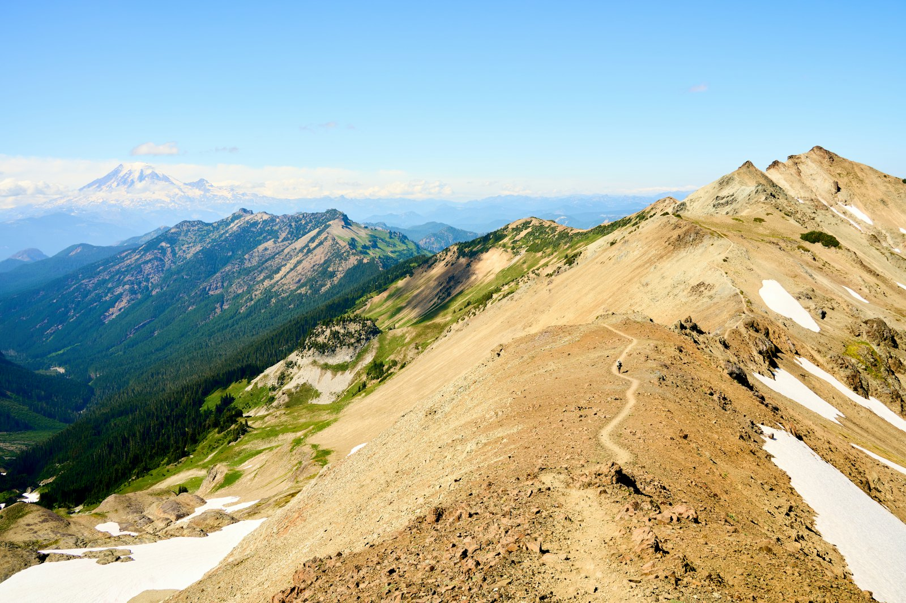
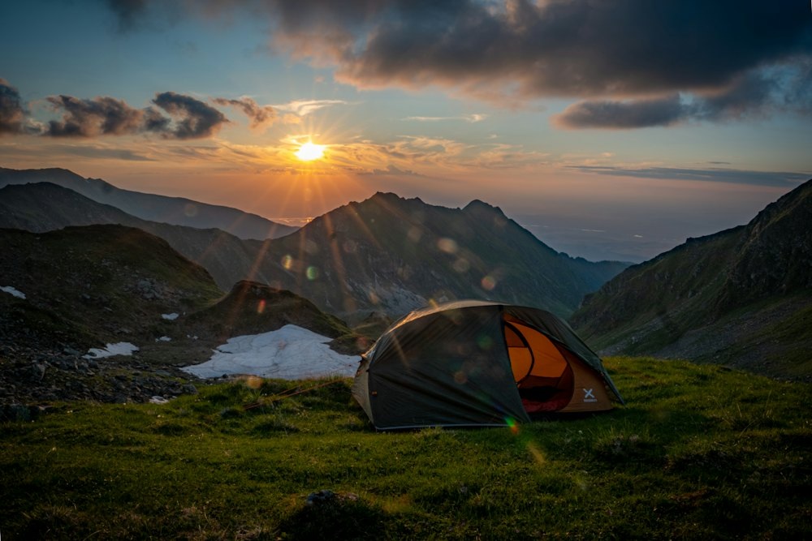

Accompagnement
Longue
distance
Traversée, trek au long cours, ultra ou expédition : on construit le projet avec vous, de l'itinéraire à la logistique, de la préparation physique au mental des jours difficiles.
- Itinéraire & repérage→
- Logistique & ravitaillement→
- Préparation & suivi→

